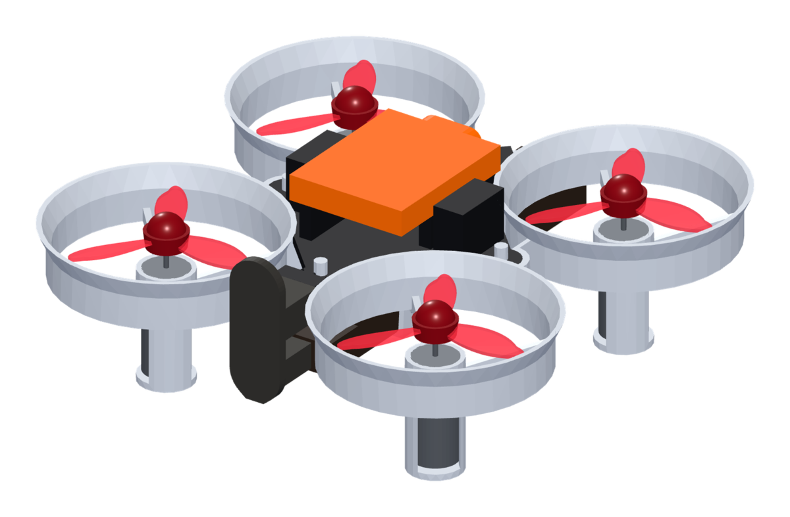

操縦体験会ガイド
StampFly を飛ばそう！
ドローンの傾きの名前と、
コントローラの使い方

ドローンの動き ― 3 つの傾きと上下
機体を傾けると、プロペラの力が傾いた向きに機体を押して、その方向へ進みます。
ピッチ前後の傾き
機首を下げると前へ、上げると後ろへ進む
左スティック 上下
ロール左右の傾き
右に傾くと右へ、左に傾くと左へ進む
左スティック 左右
ヨー機首の向き
その場で機首の向きを水平に回す。右に倒すと右回り（上から見て時計回り）
右スティック 左右
上昇・下降
上に倒すと上昇、下に倒すと下降。手を離すとその高さで止まる（ALT HOLD のとき）
右スティック 上下
コントローラの使い方（Mode 3）
左の黄色ボタン：高さのモードの切り替え。押すたびに画面が Auto ALT → Pos HOLD → Mnual ALT（地上で押す）
右の黄色ボタン：STABILIZE ⇔ ACRO の切り替え（上級者向け）
電源スイッチ
左スティック：上下＝前進・後退／左右＝左へ・右へ
右スティック：上下＝上昇・下降／左右＝機首の向き
右スティックを押し込む（カチッ）＝ スタート（離陸）／ストップ（着陸）
画面：今のモードを表示（飛行中は押さない）
飛ばす流れ（ALT HOLD）
- 1左の黄色ボタンで画面を Auto ALT に（基板の LED がオレンジ）
- 2右スティックを押し込む → 約 50 cm まで自動で上がる
- 3もう一度押し込む → ゆっくり着陸して自動で停止
- 電LED が水色に点滅 → 電池が少ない合図。着陸して電池交換
あぶない！と思ったら
- !右スティックを押し込む → ゆっくり着陸（ALT HOLD のとき）
- !着陸中にもう一度押し込む → その場でモーター停止
- !飛行中は黄色ボタンと画面を押さない
ほかの飛行モード
- POS HOLD
高さと位置を自動でキープ（LED マゼンタ）
- STABILIZE
画面が Mnual ALT のとき。高さも自分で操る（LED 黄緑）。空中で押し込むとすぐ止まる（ACRO も同じ）
- ACRO
自動で水平に戻らない上級者向け（STABILIZE で右の黄色ボタン、LED 青）
切り替えは着陸してモーターが止まっているときに